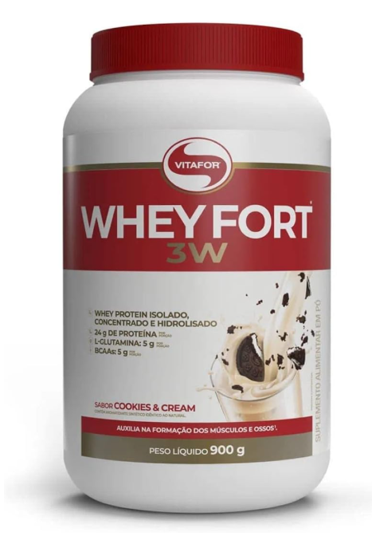
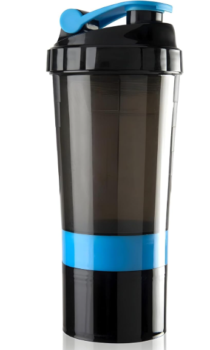

Let’s Gym Talk
Academia, ciência e motivação
Academia, ciência e motivação
O whey protein é um dos suplementos mais populares do mundo fitness. Mas muita gente compra sem entender se realmente precisa.
A verdade é simples: whey não é mágico. Ele é apenas uma proteína em pó, prática e eficiente. Se você já bate sua meta diária de proteína com comida, talvez não precise.
Whey é a proteína extraída do soro do leite. Ela tem alta qualidade e ótima absorção, sendo muito usada para ajudar no ganho de massa muscular.
O principal objetivo do whey é ajudar você a bater sua meta diária de proteína. Ele facilita muito para quem tem rotina corrida.
Whey por si só não engorda. O que engorda é excesso de calorias. Se você toma whey dentro da dieta, ele pode até ajudar no emagrecimento, porque aumenta saciedade.
A forma mais comum é usar 20g a 30g por dia (dependendo da dieta). Pode ser com água ou leite.
O horário não é tão importante. O mais importante é o total diário de proteína.
Não obrigatoriamente. O “pós treino imediato” não é tão essencial quanto as pessoas pensam. O que importa é consumir proteína ao longo do dia.
A proteína ideal é aquela que você consegue consumir todos os dias com consistência. Whey é excelente, mas frango, ovos, carne e leite também funcionam.
Whey pode ser útil para:
Vale a pena se ele facilitar sua dieta e te ajudar a manter consistência. Caso contrário, você pode gastar dinheiro à toa.
Whey protein é um suplemento excelente e seguro, mas não é obrigatório. Ele é um atalho prático para bater proteína diária.
⚠️ Este artigo é educativo e não substitui orientação médica ou nutricional.
Leia também: Creatina e Superávit calórico.
Aqui estão produtos úteis para facilitar consumo de proteína e dieta.

Excelente para recuperação muscular e hipertrofia consequente.
Qualidade: ⭐⭐⭐⭐⭐
Uso: 20g a 30g por dia.
Ver na Amazon
Mistura whey com água/leite de forma prática e rápida.
Qualidade: ⭐⭐⭐⭐⭐
Uso: Misturar suplementos e consumir.
Ver na Amazon